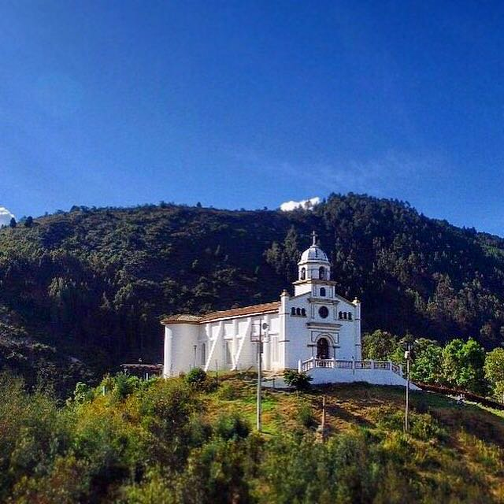

La Valvanera es parte del Cerro Occidental del Resguardo Indígena Muisca de Fonquetá y Cerca de Piedra, ubicado en el municipio de Chía, Cundinamarca.

El cerro era considerado un lugar de poder y conexión espiritual.
✨ Ilustración ceremonial aquí
Construcción: 1937 — Liderada por el padre Héctor Horacio Hernández.
Trabajo Comunitario:
Hoy representa el sincretismo entre espiritualidad Muisca y tradición católica.
⛪ Espacio para foto de la iglesia
Procesiones cada 3 de mayo — símbolo de devoción y protección espiritual.
Lugar ancestral usado para ceremonias; sitio de energía y conexión espiritual.
Relacionada con las guardianas de las fuentes de agua.
🌄 Espacio para ilustración del cerro